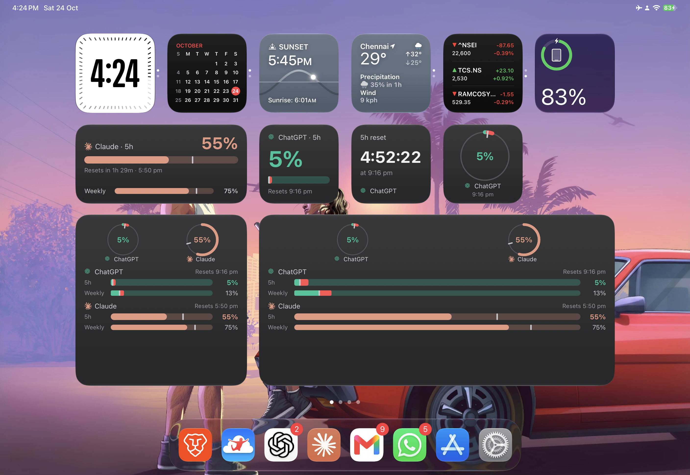

iOS widgets — rev C
CCRM-94 (iOS App), from the iPad device check on 24 Oct. Layout by Fable; drawn at real point sizes (1 px = 1 pt) on the iPad 11″ canvas Robin runs (Display Zoom “More Space”: Small 160, Medium 346×157, Large 346×346, Extra Large 724×346). The Small and Medium faces you liked (Number, Countdown, Strip) don’t change.
What we’re fixing (your screenshot)

1 · Small “Bars” — replaces the small Ring
The Strip squeezed into a square: the 5h block on top, Weekly under it. Picks one account, like Number and Countdown. The reset line follows the footnote rule every face uses (sign in › as of › limit › runs out › resets).
Light, and where space runs out
Below 136 pt tall the Weekly reset line goes; below 119 pt the 5h reset line goes too and its clock moves into the header. iPhone SE (141 pt widget, 109 pt inside) is the tightest case.
2 · Large — one column of account cards
| Accounts | Each card gets | Tier |
|---|---|---|
| 1 | the whole widget | T1 Full: big number, 5h bar, reset, pace and projection, trend chart, Weekly row |
| 2 (yours) | 314 × 151 | T3 Regular: no chart, everything else |
| 3–4 | 314 × 97 / 71 | T4 Compact: header with 5h number and reset, 5h and Weekly bars |
| 5–6 | 314 × 53 / 42 | T5 Mini: one row, both bars side by side |
| 7+ | six minis and “+N more · open Cooldown” (D3) | |
3 · Extra Large (iPad) — a grid, never one wide column
One account gets its 5h and its Weekly side by side, each with its chart. Two accounts get a full card each, which is your case. More accounts move to narrower and shorter tiers.
4 · Medium Overview — new, only if the Ring goes (D1)
“All accounts” in the Medium size, in the Strip’s bar language. One account looks like the Strip.
5 · States on the account card
Large, three accounts in T4, then one account in T1 for each state. The chart never hides: with no reading it draws its guides and pace line, dimmed.